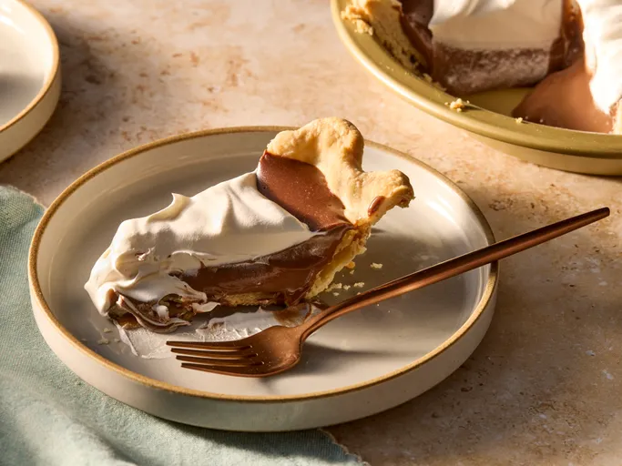

Home
Chocolate Cream Pie Recipe

Description
This chocolate cream pie recipe makes a creamy chocolate filling from scratch. Once it's set and chilled, top with whipped cream and grated chocolate if you like.
Ingredients
- three-fourth cup white sugar, divided
- one-third cup all-purpose flour
- 2 cups milk
- 2 (1 ounce) squares unsweetened chocolate
- 3 egg yolks, lightly beaten
- 2 tablespoons butter
- 1 teaspoon vanilla extract
- 1 (9 inch) pie shell, baked
Steps
- Gather the ingredients.
- Combine 1/2 cup sugar, flour, milk, and chopped chocolate in a 2-quart saucepan. Cook over medium-high heat, stirring constantly, until mixture begins to bubble. Reduce heat; simmer and continue stirring for 2 minutes more.
- Remove pan from heat. Whisk remaining 1/4 cup sugar into egg yolks.
- Pour the hot milk mixture into the egg yolks in a slow stream, whisking constantly. Return filling mixture to the saucepan and cook over medium heat for an additional 90 seconds, stirring constantly. Remove from heat, and stir in butter and vanilla.
- Pour filling into pie shell, and chill until set, about 4 hours.
- Top with whipped cream and a little grated chocolate before serving. Enjoy!